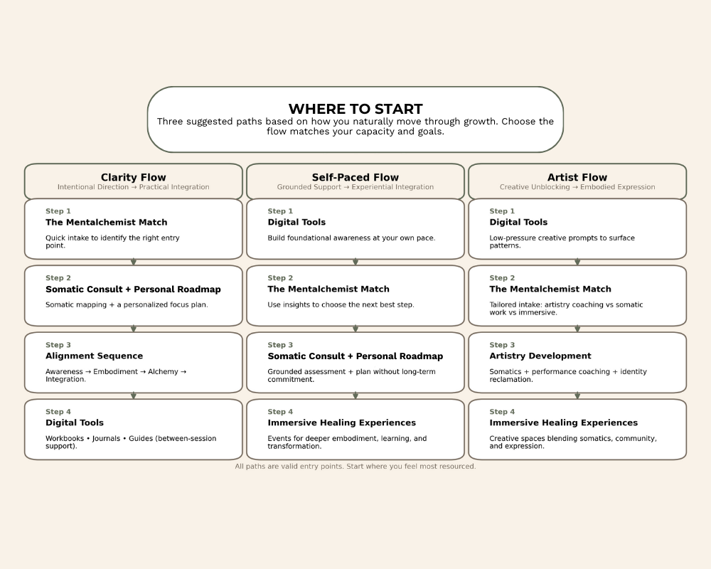

Where To Start
Not everyone enters this work the same way. To make it easier, here are three suggested paths based on how you naturally move through growth. Whether you want clear guidance from the start or prefer to explore at your own pace, there’s a path that matches your capacity and goals.

Find your starting place
Clarity Flow
- Step 1 — The Mentalchemist Match Start with a quick intake that helps us identify the right entry point for you based on goals, capacity, and current patterns.
- Step 2 — Somatic Consult + Personalized Roadmap A diagnostic session that maps out what’s happening in your body, what’s driving the patterns, and what areas to focus on shifting.
- Step 3 — Alignment Sequence Use the roadmap to create sustained change through the Mentalchemy framework: Awareness → Embodiment → Alchemy → Integration.
- Step 4 — Digital Tools Workbooks, journals, and guides to supplement between sessions for accountability, deeper reflection, and self-paced support.
Self-paced Flow
- Step 1 — Digital Tools Start with workbooks and guides to help you build foundational awareness, explore patterns, and get a feel for your style and approach.
- Step 2 — The Mentalchemist Match Use insights from the digital tools and complete the intake to identify the next best step tailored to your readiness.
- Step 3 — Somatic Consult + Personalized Roadmap Receive your grounded assessment, somatic mapping, and a personalized plan without committing to long-term coaching.
- Step 4 — Immersive Healing Experiences Participate in local events centered in communal learning, deeper embodiment, and immersive transformation.
Artist Flow
- Step 1 — Digital Tools Start with low-pressure exercises, reflection prompts, or creative-focused workbooks to surface patterns around expression, inhibition, and capacity.
- Step 2 — The Mentalchemist Match Complete a tailored intake that identifies whether your next step should be artistry coaching, somatic work, or a creative-focused immersive experience.
- Step 3 — Artistry Development Focused sessions that blend somatics, performance coaching, expressive work, and identity reclamation. Ideal for rebuilding trust with your voice and strengthening stage presence.
- Step 4 — Immersive Healing Experiences Move into environments designed for deeper expression; spaces that blend somatics, creativity, and community to support your artistic expansion and reconnection with your craft.